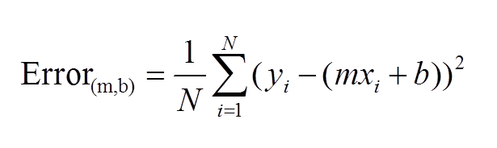
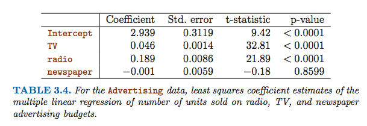

xxxxxxxxxx## Communication### Imagine you are trying to explain to someone what Linear Regression is - but they have no programming/maths experience? How would you explain the overall process, what a p-value means and what R-Squared means?*Linear regression* is a way for us to map the relationship between one or several factors (called _predictors_ or independent variables) and another unknown factor (the dependent variable or _target_), in a _straight line_ relationship. One example is using the precipitation, yesterday's temperature and humidity (as predictors) to predict today's temperature (the target). It is best to use when you're trying to predict a number, like the temperature or the price of a car.There are several ways to find the line that best predicts the value of the target based on the predictors. One way is by _gradient descent_, which essentially finds the line with the lowest error and spits it out. So if the equation for the line is y = mx + b, the error of the line will be (y1 - mx1 + b)^2 + (y2 - mx2 + b)^2 + ... (yn - mxn + b)^2/ (number of x,y pairs). The closer the error is to 0, the better the line. It then finds the values of m and b that will result in the lowest error value. See here for more information: [Link](https://spin.atomicobject.com/2014/06/24/gradient-descent-linear-regression/)_R^2_ is a way to determine how well the "linear regression" finds the target using the predictors. It is a score between 1 and 0, where 1 is a perfect fit. Basically, it is the "residual sum of squares" (the sum of all the distances between the predicted line and the actual data point) over the "total sum of squares" (the sum of all the distances between the actual data point and the average target (e.g. the average temperature)). It is 1 - (diff between predicted + actual target / diff between average + actual target). You want this to be as close as possible to 1._P-value_ is how we test whether there is any relationship at all between the predictors and the target. The p-value is to do with the frequency of that occurring randomly. For example, there would be no point in performing linear regression to find today's temperature in Sydney which used as a predictor the price of fish in China. If the P-value is higher than a small decimal (normally 0.05), it means there is no relationship between the target and the predictor. You are generally hoping the p-value will be 0, showing direct correlation between the predictor and target.Linear regression is a way for us to map the relationship between one or several factors (called predictors or independent variables) and another unknown factor (the dependent variable or target), in a straight line relationship. One example is using the precipitation, yesterday's temperature and humidity (as predictors) to predict today's temperature (the target). It is best to use when you're trying to predict a number, like the temperature or the price of a car.
There are several ways to find the line that best predicts the value of the target based on the predictors. One way is by gradient descent, which essentially finds the line with the lowest error and spits it out. So if the equation for the line is y = mx + b, the error of the line will be (y1 - mx1 + b)^2 + (y2 - mx2 + b)^2 + ... (yn - mxn + b)^2/ (number of x,y pairs). The closer the error is to 0, the better the line. It then finds the values of m and b that will result in the lowest error value. See here for more information: Link 
R^2 is a way to determine how well the "linear regression" finds the target using the predictors. It is a score between 1 and 0, where 1 is a perfect fit. Basically, it is the "residual sum of squares" (the sum of all the distances between the predicted line and the actual data point) over the "total sum of squares" (the sum of all the distances between the actual data point and the average target (e.g. the average temperature)). It is 1 - (diff between predicted + actual target / diff between average + actual target). You want this to be as close as possible to 1.
P-value is how we test whether there is any relationship at all between the predictors and the target. The p-value is to do with the frequency of that occurring randomly. For example, there would be no point in performing linear regression to find today's temperature in Sydney which used as a predictor the price of fish in China. If the P-value is higher than a small decimal (normally 0.05), it means there is no relationship between the target and the predictor. You are generally hoping the p-value will be 0, showing direct correlation between the predictor and target.
x
### Read the paper: [Useful things to know about machine learning]( https://homes.cs.washington.edu/~pedrod/papers/cacm12.pdf). #### What have we covered so far from this paper? - Pedro Domingos attempts to summarise the folklore of machine learning (which isn't often readily available or accessible). - He focuses on classifications - a classifier is a system that inputs a vector of discrete and/or continuous feature values and outputs a single discrete value (the class). That's where a learner inputs a training set of examples (xi, yi), where xi is an observed input and yi is the corresponding output, and outputs a classifier. - The test of the learner is whether the classifier produces the correct output yt for future examples xt.##### ITEM 1: LEARNING = REPRESENTATION + EVALUATION + OPTIMIZATION- Firstly, which learning algortihm do you choose? The space only consists of combinations of just three components: - *Representation* _A classifier must be represented in some formal language that the computer can handle._ Conversely, choosing a representation for a learner is tantamount to choosing the set of classifiers that it can possibly learn, i.e. the hypothesis space of the learner. If a classifier is not in the hypothesis space, it cannot be learned. And how can we represent the input, i.e., what features to use? - *Evaluation* An evaluation function (also called objective function or scoring function) is needed to distinguish good classifiers from bad ones. The evaluation function used internally by the algorithm may differ from the external one that we want the classifier to optimize, for ease of optimization (see below) and due to the issues discussed in the next section. - *Optimization.* A method to search among the classifiers in the language for the highest-scoring one. The choice of optimization technique is key to the efficiency of the learner, and also helps determine the classifier produced if the evaluation function has more than one optimum. It is common for new learners to start out using off-the-shelf optimizers, which are later replaced by custom-designed ones.- Most textbooks are organized by representation, and it’s easy to overlook the fact that the other components are equally important. There is no simple recipe for choosing each component, but the next sections touch on some of the key issues.##### ITEM 2: IT’S GENERALIZATION THAT COUNTS: TEST/TRAINING SPLIT- The fundamental goal of machine learning is to generalize beyond the examples in the training set.- For this reason, we need to test outside the training data. Keep some data separate to test with!- You can contaminate your test data even by just using the test data to tune parameters. - On the other hand, keeping test data reduces the data for training. Mitigate this with cross-validation (splitting data and running the algorithm several times). ##### ITEM 3: DATA ALONE IS NOT ENOUGH- Data alone is not enough, no matter how much of it you have. You always need more to successfully do machine learning. The more information you put in, the more you get out!> "Machine learning is not magic; it can’t get something from nothing. What it does is get more from less. Programming, like all engineering, is a lot of work: we have to build everything from scratch. Learning is more like farming, which lets nature do most of the work."##### ITEM 4: OVERFITTING HAS MANY FACES = MODEL EVALUATION- Overfitting is where we hallucinate a classifier (or part thereof) by encoding quirks in the data. It comes in many forms that are not immediately obvious. A more powerful learner is not necessarily better than a less powerful one.- Bias is a learner’s tendency to consistently learn the same wrong thing (underfitting).- Variance is the tendency to learn random things irrespective of the real signal (overfitting). - Ways to combat overfitting include: cross-validation, regularisation, a statistical significance test like chi-square before adding new structure, to decide whether the distribution of the class really is different with and without this structure.- Overfitting is not just caused by noise, like training examples labeled with the wrong class.- The problem of multiple testing is closely related to over-fitting. Standard statistical tests assume that only one hypothesis is being tested, but modern learners can easily test millions before they are done.- A better approach is to control the fraction of falsely accepted non-null hypotheses, known as the false discovery rate."Machine learning is not magic; it can’t get something from nothing. What it does is get more from less. Programming, like all engineering, is a lot of work: we have to build everything from scratch. Learning is more like farming, which lets nature do most of the work."
xxxxxxxxxx##### ITEM 5: INTUITION FAILS IN HIGH DIMENSIONS- When it comes to features, less is more. - Machine learning and generalising data is _much harder_ when there are more features (or high dimensionality). - Humans can't comprehend classifiers that operate in higher dimensions, because we live in a 3D world. - As such, it's hard to design a good classifier in high dimension. Although intuitively, more features would seem like it couldn't hurt, usually it can (because no new information is provided) and/or the value is cancelled out by the "curse of dimensionality". - The "blessing of non-conformity" means that examples aren't usually spread across the instance space, but are concentrated or near a lower-dimensional manifold. ##### ITEM 6: THEORETICAL GUARANTEES ARE NOT WHAT THEY SEEM- Machine learning papers love theoretical guarantees, e.g. if you have X examples, this model will make a good generalisation. - It used to be thought that we could not have guarantees in induction (only in deduction), but in fact we can (particularly if we’re willing to settle for probabilistic guarantees!).> "The basic argument is remarkably simple [5]. Let’s say a classifier is bad if its true error rate is greater than ǫ. Then the probability that a bad classifier is consistent with n random, independent training examples is less than (1 − ǫ)n. Let b be the number of bad classifiers in the learner’s hypothesis space H. The probability that at least one of themis consistent is less than b(1 − ǫ)n, by the union bound. Assuming the learner always returns a consistent classifier, the probability that this classifier is bad is then less than |H|(1 − ǫ)n, where we have used the fact that b ≤ |H|. So if we want this probability to be less than δ, it suffices to maken>ln(δ/|H|)/ln(1−ǫ)≥ 1 ln|H|+ln1 . ǫδ."- Guarantees should be taken with a grain of salt. > "The main role of theoretical guarantees in machine learning is not as a criterion for practical decisions, but as a source of understanding and driving force for algorithm design. In this capacity, they are quite useful; indeed, the close interplay of theory and practice is one of the main reasons machine learning has made so much progress over the years. But caveat emptor: learning is a complex phenomenon, and just because a learner has a theoretical justification and works in practice doesn’t mean the former is the reason for the latter."##### ITEM 7: FEATURE ENGINEERING IS THE KEY- Most effort in machine learning is turning the raw data into something amenable to learning, by constructing features that are.- New data scientists are often surprised how little time is spent machine elarning; it's more about building the data set and running the learner, analysing the results, modifying the data and/or the learner, and repeating.- Learning is the fastest bit because we've already mastered the data.- Feature choice is the most important thing in machine learning. Feature engineering is also harder because it's domain specific, and learners are general-purpose. - Automating the feature engineering process is the holy grail, but doing this with a large number of features to find out which are useful can be time-consuming or overfit the data. ##### ITEM 8: MORE DATA BEATS A CLEVERER ALGORITHM- There are two main choices: design a better learning algorithm, or gather more data (more examples, and possibly more raw features, subject to the curse of dimensionality). - Usually more data is better than a better algorithm, because we want data to do the work. More data means more complex classifiers, but time means simple ones are used. They all do the same to a first approximation, so try the simplest learners first. - This does bring up another problem, however: scalability. In machine learning, there are three limitations: time, memory and data. - Learners can be divided into two major types: - Fixed-size learners (e.g. linear classifiers) can only take advantage of so much data. - Variable-size learners (e.g. decision trees) can in principle learn any function given sufficient data, but in practice they may not, because of limitations of the algorithm - Learners are typically compared on measures of accuracy and computational cost. - But human effort saved and insight gained, although harder to measure, are often more important. This favours learners that produce human-understandable output (e.g., rule sets). - Orgs that have infrastructure for experimentation (with learners, data sources and learning problems) and that have collaboration between machine learning experts and domain experts succeed more. ##### ITEM 9: LEARN MANY MODELS, NOT JUST ONE- The best learner varies between different applications, so systems were developed to use different learners and to try many variations of learners. - Creating such model ensembles is now standard, by: - bagging: generate random variations of the training set by resampling, learn a classifier on each, and combine the results by voting; greatly reduces variance while only slightly increasing bias; - boosting: training examples have weights, and these are varied so that each new classifier focuses on the examples the previous ones tended to get wrong; - stacking: the outputs of individual classifiers become the inputs of a “higher-level” learner that figures out how best to combine them.- Many other techniques exist, and the trend is toward larger and larger ensembles.- Model ensembles should not be confused with Bayesian model averaging (BMA). BMA is not as good and generally not worth the effort, because they can sometimes skew the weights on hypotheses that make it equivalent to just choosing that hypothesis.##### ITEM 10: SIMPLICITY DOES NOT IMPLY ACCURACY- The simplest model isn't always going to be the best. - For example, the generalisation error of a boosted ensemble continues to improve by adding classifiers even after the training error has reached 0. ##### ITEM 11: REPRESENTABLE DOES NOT IMPLY LEARNABLE- Just because a function can be _represented_ does not mean it can be learned.- In continuous spaces, representing even simple functions using a fixed set of primitives often requires an infinite number of components.- Given finite data, time and memory, standard learners can learn only a tiny subset of all possible functions, and these subsets are different for learners with different representations.- Some representations are exponentially more compact than others for some functions. As a result, they may also re- quire exponentially less data to learn those functions. ##### ITEM 12: CORRELATION DOES NOT IMPLY CAUSATION- Correlation does not necessarily equate to causation.- Machine learning is often geared towards creating a predictive model to use as a guide to action. - However, many researchers believe causality is only a convenient fiction - a very deep philosophical question.- Consequently, ideally we actually want to use predictive modelling to predict the effects of our actions, not just to find correlations between observable variables.- Also, obtain experimental data all the time!It used to be thought that we could not have guarantees in induction (only in deduction), but in fact we can (particularly if we’re willing to settle for probabilistic guarantees!).
"The basic argument is remarkably simple [5]. Let’s say a classifier is bad if its true error rate is greater than ǫ. Then the probability that a bad classifier is consistent with n random, independent training examples is less than (1 − ǫ)n. Let b be the number of bad classifiers in the learner’s hypothesis space H. The probability that at least one of themis consistent is less than b(1 − ǫ)n, by the union bound. Assuming the learner always returns a consistent classifier, the probability that this classifier is bad is then less than |H|(1 − ǫ)n, where we have used the fact that b ≤ |H|. So if we want this probability to be less than δ, it suffices to maken>ln(δ/|H|)/ln(1−ǫ)≥ 1 ln|H|+ln1 . ǫδ."
Guarantees should be taken with a grain of salt.
"The main role of theoretical guarantees in machine learning is not as a criterion for practical decisions, but as a source of understanding and driving force for algorithm design. In this capacity, they are quite useful; indeed, the close interplay of theory and practice is one of the main reasons machine learning has made so much progress over the years. But caveat emptor: learning is a complex phenomenon, and just because a learner has a theoretical justification and works in practice doesn’t mean the former is the reason for the latter."
xxxxxxxxxx1. *Trial and error* - We just try different features and compare model evaluation metrics like RMSE for each set of features. This is timeconsuming and can result in human errors. It is also quite computationally heavy at times, if we try to use lots of different features over and over again.2. *Ridge Regression Regularisation* - This is a method whereby a penalty is imposed for each new feature that is added, to ensure that the algorith only uses valuable features. When it is zero we get least squares, as it increases the term, (the shrinkage penalty) has more of an impact and the coefficients will approach zero.3. *Lasso Regularisation* - This is a method whereby a penalty is imposed for each new feature that is added, to ensure that the algorith only uses valuable features. When it is zero we get least squares, as it increases the term, (the shrinkage penalty) has more of an impact and the coefficients will equal zero.xxxxxxxxxx### Complete the first 3 exercises from Chapter 3 of Introduction to Statistical Learning in Pythonxxxxxxxxxx#### 1. Describe the null hypotheses to which the p-values given in Table 3.4 correspond. Explain what conclusions you can draw based on these p-values. Your explanation should be phrased in terms of sales, TV, radio, and newspaper, rather than in terms of the coefficients of the linear model.<img src="table34.png" align="left">
- The null hypotheses is that newspaper, TV and radio advertising budgets have no effect on sales. - For "TV" and "Radio", the p-value is very close to zero and so we reject the null hypothesis and can assert that a relationship exists between sales of units and the advertising budget for radio and TV. - Since the sales variable is in thousands of units, and the TV/radio variabless are in thousands of dollars, it means that an increase of $1,000 in the advertising budget for TV will mean an additional 46 unit sales and for radio will mean an additional 189 unit sales.- Based on the intercept, it looks like newspaper advertising has no effect on sales, since the p-value is so high. That is, we accept the null hypothesis for "newspaper". #### 2. Carefully explain the differences between the KNN classifier and KNN regression methods. - The KNN regression method is closely related to the KNN classifier. - The KNN classifier is used to solve classification problems by finding the nearest data points to X (its neighbours) and then estimating the conditional probability that X falls into class J as the fraction of neighbours who are also in class J. - The KNN regression method is used to solve regression) i.e. numerical problems by finding the neighbours of X and then estimating Y as the average of all the responses of X's neighbours. xxxxxxxxxx#### 3. Suppose we have a data set with five predictors, X1 = GPA, X2 = IQ, X3 = Gender (1 for Female and 0 for Male), X4 = Interaction between GPA and IQ, and X5 = Interaction between GPA and Gender. The response is starting salary after graduation (in thousands of dollars). Suppose we use least squares to fit the model, and get βˆ0 = 50, βˆ1 = 20 , βˆ 2 = 0 .07 , βˆ 3 = 35 , βˆ 4 = 0.01 , βˆ 5 = -10 .Starting salary (in $K) = 50 + (GPA x 20) + (IQ x 0.07) + (Gender x 35 (female = 1, male = 0)) + (GPA X IQ x 0.01) + (GPA X Gender x -10) ##### (a) Which answer is correct, and why? - i. For a fixed value of IQ and GPA, males earn more on average than females. - ii. For a fixed value of IQ and GPA, females earn more on average than males. - iii. For a fixed value of IQ and GPA, males earn more on average than females provided that the GPA is high enough. - iv. For a fixed value of IQ and GPA, females earn more on average than males provided that the GPA is high enough. For males, the starting salary is = 50 + 20*GPA + 0.07*IQ + 0.01*GPA*IQFor females, the starting salary = 50 + 20*GPA + 0.07*IQ + 35 + 0.01*GPA*IQ -10*GPA = 85 + 10*GPA + 0.07*IQ + 0.01*GPA*IQIf 50 + 20*GPA is greater than 85 + 10*GPA, males will have a higher starting salary = 50 + 20*GPA > 85 + 10*GPA = 10 * GPA > 35 = GPA > 35/10 If GPA > 3.5 then men will have a higher starting salary. Therefore, the correct statement is: For a fixed value of IQ and GPA, males earn more on average than females provided that the GPA is high enough.Starting salary (in $K) = 50 + (GPA x 20) + (IQ x 0.07) + (Gender x 35 (female = 1, male = 0)) + (GPA X IQ x 0.01) + (GPA X Gender x -10)
For males, the starting salary is = 50 + 20GPA + 0.07IQ + 0.01GPAIQ
For females, the starting salary = 50 + 20GPA + 0.07IQ + 35 + 0.01GPAIQ -10GPA = 85 + 10GPA + 0.07IQ + 0.01GPA*IQ
If 50 + 20GPA is greater than 85 + 10GPA, males will have a higher starting salary
= 50 + 20GPA > 85 + 10GPA
= 10 * GPA > 35 = GPA > 35/10
If GPA > 3.5 then men will have a higher starting salary.
Therefore, the correct statement is: For a fixed value of IQ and GPA, males earn more on average than females provided that the GPA is high enough.
##### (b) Predict the salary of a female with IQ of 110 and a GPA of 4.0. 50 + 4 x 20 + 0.07 x 110 + 35 x 1 + (110 x 4.0 x 0.01) + (4.0 x 1 x -10) = 137.1 She would have a starting salary of $137,100. 50 + 4 x 20 + 0.07 x 110 + 35 x 1 + (110 x 4.0 x 0.01) + (4.0 x 1 x -10) = 137.1 She would have a starting salary of $137,100.
##### (c) True or false: Since the coefficient for the GPA/IQ interaction term is very small, there is very little evidence of an interaction effect. Justify your answer.False. In order to check the impact of the interaction of GPA and IQ on the quality of the model, we need to look at the p-values. Merely having a small coefficient isn't enough to show there isn't interaction.False. In order to check the impact of the interaction of GPA and IQ on the quality of the model, we need to look at the p-values. Merely having a small coefficient isn't enough to show there isn't interaction.
xxxxxxxxxxhttps://github.com/mikaelasquirchuk/dat8syd-projectFor the following, please see the notebook here for existing exploration of data: https://github.com/mikaelasquirchuk/dat8syd-project/blob/master/Enrolments.ipynbhttps://github.com/mikaelasquirchuk/dat8syd-project
For the following, please see the notebook here for existing exploration of data: https://github.com/mikaelasquirchuk/dat8syd-project/blob/master/Enrolments.ipynb
xxxxxxxxxx- Load the data you have gathered for your project into Python and run some summary statistics over the data. Are there any interesting features of the data that jump out? (Include the code).xxxxxxxxxx- Draft/Sketch (or wireframe) some data visualisations that would be useful for you to explore your data set.xxxxxxxxxx- Are there any regresion or clustering techniques you could use in your project? Write them down (with the corresponding scikit learn function) and what you think you would get out of it. Try it out if you get a chance.**Instructions: copy this file and append your name in the filename, e.g. Homework2_ian_hansel.ipynb.Then commit this in your local repository, push it to your github account and create a pull request so I can see your work. Remeber if you get stuck to look at the slides going over Fork, Clone, Commit, Push and Pull request.**Instructions: copy this file and append your name in the filename, e.g. Homework2_ian_hansel.ipynb. Then commit this in your local repository, push it to your github account and create a pull request so I can see your work. Remeber if you get stuck to look at the slides going over Fork, Clone, Commit, Push and Pull request.